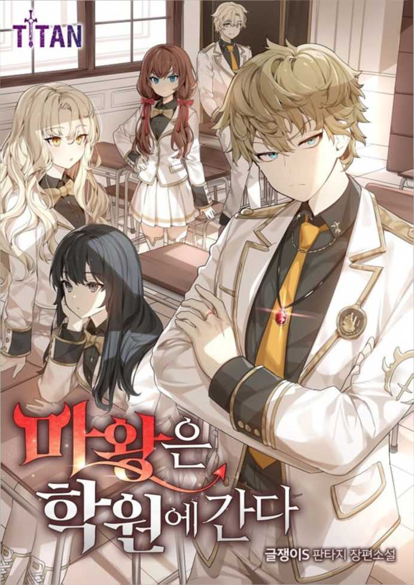

##!!## 마왕은 학원에 간다 Chapter 175 화
##!!## The Demon Prince Goes to Academy Chapter 5
175 화
175 Tue
헤리엇은 화가 났다기 보단 서러웠 던 것 같았다. 우리에게 도움이 될 수 없어서. 가족들에게도 어린애라 무시당했는데 우리들에게까지 무시 당한 것 같아서 서러웠던 것 같았다.
Harriet seemed rather sad than angry. Because it can't help us. He was ignored by his family because he was a child, but he seemed to be sad because he seemed to have been ignored by us.
화가 난다는 것과는 조금 다른 개 념이 다.
It's a little different from being angry.
결국，내가 에둘러 말해준 덕에 헤 리엇은 기분이 꽤 풀린 것 같았다.
After all, Harriet seemed quite relieved by my circumspection.
녀석과 난 테라스에서 대화를 좀 더 나눴다. 헤리엇은 내가 준 한 쌍 의 귀걸이를 찼다. 그리 화려하진 않았다. 새끼손톱 반만 한 에메랄드 가 박혀있는 버튼 이어링이었다. 그 리 튀지도 않고，딱 적당한 장신구 느낌이 났다.
He and I had some more conversation on the terrace. Harriet wore a pair of earrings I gave him. It wasn't that fancy. It was a button earring with an emerald half the size of a baby nail. It didn't splatter, and it felt just the right amount of jewelry.
“이，이거…. 고마운데…. 기분 좀 이상해져.”
"This, this... thank you.It makes me feel a little weird."
약간 멍한 표정이 된 헤리엇의 입 꼬리가 움찔거렸다.
Harriet's slightly dazed mouth tail flinched.
“이상해진다니?”
"What do you mean it's going to get weird?â€
“뭐라고 해야 하斗". 기분이 좀， 가라앉는다고 해야 하나…?”
"What should I say?" I feel a little, I feel a little down.?â€
마법물품인 게 확실히 느껴지긴 하 는데 평온마법이 심신을 안정시켜주 니까 기분이 이상해지는 모양이었다.
I felt it was a magic item, but it seemed to feel strange because the tranquil magic stabilized my mind and body.
항상 텐션이 좀 높은 헤리엇을 강 제로 엘렌처럼 만들어주는 그런 물 건이라 이건가. 그럼 기분이 이상해 진다고 느낄 법도 하다.
Is it because it's a water gun that makes Harriet, which is always a bit hyper, like a river zero Ellen? Then you may feel strange.
신경안정제가 자동투약되는 개념이 라 생각하면 되는 것 같은데.
I think you can think of it as an automatic neurostabilizer.
“항상 할 필요 있냐? 필요할 때에 만 써.”
"Is it always necessary? Use it only when you need it."
“으，으응…. 미안.”
"Uh, uh... Sorry."
선물인데 항상 착용하지 못해서 미 안한 모양이다. 아니，애초에 부득이 한 실전상황에서 쓰길 바라면서 준 물건이니까 별 상관없는데.
It's a gift, but I don't think it's because it's not always worn. No, it doesn't matter because I gave it to you hoping you would use it in a real situation.
“그런데 이게 얼마나 귀한 물건인 지는 모르겠는데，어느 정도인거냐? 너희 가문이면 이런 물품 창고에 막 가득 쌓여있고 그렇지 않아?”
"But I don't know how precious this thing is, how precious is it? If it's your family, isn't it just piled up in a warehouse like this?"
주기 전에 고민한 건 그런 거였다.
That's what I was worried about before giving it to her.
생투안 공국은 마법으로 유명한 나 라다. 일전에 본 적 있는 생투안 대 공은 대마법사였다. 그러니 내가 이 걸 헤리엇에게 줘봐야 창고에 있는 흔해빠진 마법물품보다 못할 가능성 도 얼마든지 있었다.
The Duke of Saint-Tuan is me, who is famous for magic. The Saint-Tuan v. Gong I saw the other day was a wizard. So there was a good chance that I would give this to Harriet less than the common wizards in the warehouse.
그래서 줄까 말까 고민하다가 기분 이라도 풀어주려고 줘버린 거다. 헤 리엇은 기분 요상해지는 귀걸이를 빼고 품에 넣더니 잠시 고민했다.
That's why I thought about giving it to him or not, but I gave it to him to relieve my feelings. Harriet took out the strange earrings and put them in his arms, and thought for a moment.
“마법물품의 희귀도와 가격을 정하 는 요건은 크게 셋 있어，하나는 사 용 횟수，둘은 사용된 마법，셋은 부여된 물건.”
"There are three main requirements for determining the rarity and price of a magic item, one for buying, two for using, and one for giving."
“그래?”
"Really?"
“응. 단발성 마법 스크롤도 따지고 보면 마법물품이잖아?”
"Yes. It's magical if you look at a single-shot magic scroll, too, isn't it?
마법 스크롤은 일회용품에 해당한 다. 헤리엇은 잠깐 기다려보라고 하 더니 자기 방에 들어가서 뭔가를 가 져왔다. 그건 약 삼십 센티미터 가 량 길이의 완드였다.
Magic scrolls are disposable. Harriet told me to wait a moment, but I went into his room and got something. It was a wand about thirty centimeters long.
“그게 뭐나? 마법 지팡이 그런 건가?”
"What's that? A magic wand or something?"
“호신용 무기 같은 거야. 혹시 몰 라서 갖고 다녀. 이런 마법사용 완 드나 스태프 같은 경우엔 대개 두 가지야. 사용자의 마력 흐름을 안정 시키거나 컨트롤하는 데에 도움을 주는 경우가 있고，다른 경우는 마 법이 충전되어 있어. 스크롤이랑 다 른 점은 마법을 좀 다룰 줄 아는 사람만 쓸 수 있다는거지만.” 완드나 스태프는 마법 사용 그 자 체를 도와주거나 마법이 충전되어있 는 경우가 있단다.
"It's like a weapon of self-defense. I don't know if you carry it with you. There are usually two kinds of magic staff. It can help stabilize or control the user's mana flow, and in other cases, the horse method is charged. Scrolls and other dots are that only those who can handle magic can use it." Wandna's staff can use magic to help the person with his sieve or the magic can be charged.
“여기엔 체인 라이트닝 (Chain lightening)마법이 열 번 충전돼있어.”
"There's ten chain lighting spells here."
“그럼 그게 스크롤보다 훨씬 비싸 다 이건가?”
"So it's much more expensive than scrolling?"
“그렇지. 사용횟수를 전부 소모하 면 폐품이 되는 경우도 있고，재충 전을 해서 사용할 수 있는 것도 있 어. 당연히 재충전 가능한 쪽이 만 들기 더 어렵고 비싸. 이건 재충전 이 되는 물건이야.”
"Right. If you use up the entire number of times, it can be discarded, and some can be used before re-farming. Of course, the rechargeable side is more difficult and expensive to make. This is a rechargeable thing."
체인 라이트닝이라는 상급 파괴마 법을 10회 사용 가능한 완드，그리 고 재중전이 가능하다. 엄청나게 강 력한 마법물품일거다.
The advanced breaking horse law, chain lighting, can be re-drawn with 10 uses. It must be a super strong magic item.
…얘 따라오고 싶어 했던 이유가 있네，믿을만한 물건이 있었구나.
...there's a reason why she wanted to follow me, there's something to be trusted.
“그런데 완드 중엔 그런 것도 있단 말이야. 물건 자체에 마법이 영구각 인 되어있어서 자신의 마력만 흘려 넣으면 각인된 마법이 발동하는 거.”
"But there's something like that in Wand. The magic itself is permanently imprinted, so if you put your own mana in it, the imprinted magic is activated."
“•••어.”
"••어어어"
“그런 게 제일 희귀하지. 캐스팅 없이 각인된 주문을 곧장 시전할 수 있는 거니까. 그런 물건은 엄청나게 희귀해. 만들 수 있는 기술도 대부 분 실전된 것으로 알고 있어.”
"That's the rarest thing. You can cast an imprinted order without casting it. Such things are extremely rare. I know that the technology you can make has also been put into practice."
마법 사용 횟수에 따라서 마법물품 의 희귀도가 달라진다. 그리고 재충 전 여부도 중요하다.
Depending on the number of times you use magic, the rarity of the magic item varies. And it is also important whether it is recharged or not.
곧，마법이 영구각인 된 아티팩트 는 매우 희귀하다는 거다. 나는 내 목에 걸린 화요의 불꽃이 얼마나 말 도 안 되는 물건인지 실감이 났다.
In other words, magical artifacts are very rare. I realized how ridiculous the firework in my throat was.
단 하나의 주문이 영구각인 된 완 드나 스태프도 고대유물 취급받는 마당인데，화요의 불꽃은 마법사조 차도 아닌 내가 의지만으로 불꽃을 발생시킬 수 있다. 마법의 한 계통 이 아니라 원소의 한 계통을 사용할 수 있는 물건이다.
Even the staff in Wanna-dong, where a single order has been permanently imprinted, is treated as an ancient relic, and the flame of Hwa-yo can be generated only by the will of me, not by the car of the wizard. It is not a magical system, but an object that can use an element's system.
엄청난 보물이란 생각은 들었는데 헤리엇에게 들으니 얼마나 강력한 마법물품인지 실감이 났다. 대륙 전 체를 통틀어서도 엄청난 보물인거다.
I thought it was a huge treasure, but when I heard it from Harriet, I realized how powerful it was. It's a great treasure all over the continent.
“그런데 이건 파괴마법의 경우고， 갑옷이나 옷 그런 데에 인첸트되는 물건들은 대개 영구각인 되는 경우 가 많아. 시동형 파괴마법을 각인하 는 게 엄청 어려워서 그런 거지만.” 실제로 나와 엘렌은 다크랜드에 갈 때 템플에서 인첸트된 장비들을 가 져갔다. 매우 비싼 물건일거란 생각 이 들긴 했지만 그건 전부 영구각인 이었다.
"But this is a case of sabotage, and armor and clothing are often permanently imprinted. It's because it's so hard to imprint a start-up destructive magic." In fact, me and Ellen took the equipment from Temple when we went to Darkland. I thought it would be a very expensive item, but it was all permanent.
인첸트는 파괴마법 계열이 엄청나 게 희귀하고 비싸단 거다.
In other words, Incent is extremely rare and expensive in the line of destructive magic.
“물론 어떤 마법이 부여되었느냐에 따라서도 희귀도가 달라지지만，마 법이 부여된 장신구의 경우에는 엄 청나게 희귀해.”
"Of course, the degree of rarity depends on what magic is given, but in the case of ornaments given the law, it is extremely rare."
“왜?” 헤리엇은 내게서 받은 귀걸이를 검 지와 엄지 사이로 잡고 보여줬다.
"Why?" Harriet showed me the earrings he had received from me, holding them between the black and the thumb.
“작잖아.”
"It's small."
“이렇게 작은 물건에 마법을 영구 각인 하는 게 쉬운 일이겠어? 심지 어 경량화 같은 하급주문도 아니라 정신계열 안정화 주문이잖아. 트랭 뭘리티는 최상급은 아니라 해도 중 상위급은 되는 정신계열 마법이라 고. 요만한 물건 하나 귀에 거는 걸 로 그런 마법효과를 받을 수 있는 건데，쉽게 만들 수 있을 리 없지.” 마법물품의 희귀도를 결정하는 세 번째 요건은 부여된 물품이 무엇인 가라고 했다.
"Is it easy to permanently imprint magic on such a small thing? It's not a low-level order like wick and lightening, it's a mental stabilization order. Trang Nulity is not the best, but it's the best of the best in the world. You can't make it easy if you put a little thing on your ear." The third requirement to determine the rarity of magical items is what the given items are.
곧, 크기가 중요하단 거다. 방어구 나 검 등을 비롯한 사이즈가 큰 물 품은 마법을 부여하기 쉽다. 하지만 장신구의 경우에는 아주 고도의 기 술이 필요한 모양이다.
In other words, size matters. It is easy to give magic to large-sized water bodies, including armor and swords. However, in the case of jewelry, it seems to require a very high level of skill.
그리고 내가 헤리엇에게 준 귀걸이 는 새끼손톱 반만 한 크기다.
And the earring I gave Harriet is half the size of a little nail.
“그러니까，이건 엄청 귀한 물건이 야.”
"So, this is a very precious thing."
헤리엇이 날 보며 웃는다.
Harriet smiles at me.
이게 얼마나 귀한 물건이난 내 물 음에 헤리엇이 이런 일장연설을 한 건 단 한 가지 이유뿐이었다.
There was only one reason why Harriet gave such a speech on the note of my water, which was so precious.
“고마워 라인하르트.”
"Thank you, Reinhardt."
나도 모르는 선물의 가치가 어느 정도인지 내게 설명해주고，그것에 대해 고맙다고 하기 위해서였다.
It was to explain to me how much the gift I didn't know was worth and thank you for it.
“저…. 손님들?”
"Well... guests?"
그리고 우리가 테라스에서 이야길 나누는데 갑자기 누군가 말을 걸어 왔다.
And as we were talking on the terrace, suddenly someone came to talk to us.
저택 내의 일을담당하는메이드였다.
He was the maid in charge of the affairs in the mansion.
“네?，’
"What?"
내 대답에 그녀는 약간 곤란한 투 로 중얼거렸다.
In my reply she murmured a little awkwardly.
“그…. 문제가 있습니다.”
"There's a problem."
“문제라뇨?”
"What do you mean a problem?"
“…아가씨께서 지갑을 두고 가셨습 니다.”
"...you left your wallet behind."
아. 허당 쉑.
Oh. Foolish.
잊을만하니 터지는구나.
It's so unforgettable that it explodes.
허당은 멍청이하고는 좀 다르다.
Being sloppy is a little different from being an idiot.
잘 하는 것 같다가 이상한 타이밍 에 전혀 예상치 못한 실수를 한다.
He seems to be doing well and makes a totally unexpected mistake at a strange timing.
리아나 데 그란츠가 그런 타입이다.
Rihanna de Grandz is that type.
계획 다 세우고 뭘 할지도 다 준 비해놓고 쇼핑을 갔는데 도착해서 계산하려고 보니 어? 지갑이?
I made all the plans and I went shopping without knowing what to do, but when I arrived, I was trying to pay for it. Wallet?
이런 상황을 맞이한 거다.
This is what we're facing.
사용인들은 리아나의 방을 청소하 다가 테이블에 떡하니 올려져있는 금화 주머니를 보고 당황한 거겠지.
The users must have been embarrassed to see the pockets of the gold coins on the table as they were cleaning Rihanna's room.
물론 대귀족인 만큼 이름이 곧 신 용이라 그란츠 공작가 앞으로 달아 둬 이런 식으로 행동할 수도 있겠지 만 말이지.
Of course, since he's a great noble, his name is Shin Yong, the Duke of Grantz might have left it in front of him and acted like this.
그런데 여긴 황도 그라디엄이 아니다.
But this isn't even the Hwangdo Gradium.
대귀족이라 한들 그란츠 공작가의 위세가 바다 건너 이 먼 남쪽 섬나 라에서도 효력을 발휘할지 어떨지를 모르겠다.
I don't know whether the Duke of Grantz's authority will work on this far-off southern island across the sea.
심지어 마부 한 명을 제외하면 수 행원을 데려간 것도 아니란다.
He didn't even take Su with him except for one horseman.
“……아델리아도 지갑을 안 가져갔어.”
"......Adelia didn't take her wallet either."
“…엘렌도 마찬가지인 것 같은데.”
"...and Ellen seems to be as well."
우린 각자 짐 뒤져도 뭐라 할 사람 없는 짐을 뒤져봤는데，하인리히 짐 은 확인을 못 했지만 아델리아와 엘 렌은 돈을 안 가져간 걸 확인했다.
We looked through each of our luggage and found out that Heinrich Jim didn't check, but Adelia and Elle Len didn't take the money.
느낌상 하인리히가 돈을 가져갔는지 어떤지는 모르겠는데, 얘 어쩐지 안 가져갔을 것 같다. 뭘 사러가 아니라 그냥 리아나를 따라간 것 같으니까.
I don't know if Heinrich took the money or not, but I don't think he did. I don't think he was going to buy something, he just followed Rihanna.
그란츠 공작가의 마법사가 텔레포 트로 전달해주면 되겠지만 일이 바 빠서 우리가 돌아가기로 한 날에나
The Duke of Grantz's sorcerer could teleport you, but it's not until the day we're supposed to go back.
올 거다. 사용인들은 뾰족한 수가 없으니 우리에게라도 물어보려는 것 같았다.
They'll come. The users seemed to ask us because they couldn't find a way.
이대로라면 공작가 영애가 친구들 한테 한턱 쏜다고 호기롭게 가놓고 돈 없어서 얼빠지는 상황이 온다. 뭐 먹다가 계산할 돈 없어서 설거지 라도 하면 크나큰 치욕이다.
At this rate, there is a situation in which the peacock goes out of his way because Young-ae is going to buy a treat for his friends. It's a disgrace to wash dishes because you don't have enough money to pay for something.
“음…. 그런데 이미 라자크 시내로 들어갔을 텐데 돈주머니를 우리가 가 져간다고 해도 어떻게 갖다 주지?”
"Well... but you've already gone into downtown Rajak, so how would you get the moneybag if we went away?"
그냥 개네들이 쪽 좀 팔고 돌아오 길 기다리는 게 맞지 않나?
Shouldn't we just sell some of the dogs and wait for them to come back?
찾는다고 해서 찾아질 것 같지도 않고. 헤리엇은 가만히 고갤 갸웃거 렸다.
I don't think I'll find it just because I'm looking for it. Harriet still tilted his head.
“학생증 가져간 애들은 있지 않을까?”
"Wouldn't there be kids who took their student ID cards?"
돈주머니를 두고 간 거지 템플 학 생증은 가져갔을지도 모른다는 헤리 엇의 말은 꽤 그럴듯했다. 음，엘렌 은 안 가져갔을지도 모르지만 다른 녀석들은 가져갔을 수도 있다. 템플 학생증은 곧 신분증이니까. 언제 어 디서 필요할지 모른다.
It was quite plausible to hear that Harry O'clock said he might have taken the "Temple Scholarship" with him. Well, Ellen may not have taken it, but the others may have. Temple student ID is an ID card. I don't know when or where I might need it.
“그런데 학생증 가져갔다고 찾을 수 있냐?”
"But can you find me for taking my student ID?"
« o ，，
« o ，，
卞'
åž'
헤리엇은 고갤 끄덕였다.
Harriet nodded.
“나 이제 학생증에 걸린 추적마법 탐지할 줄 알아.”
"I can now detect a tracer on my student ID."
이건 저번 내 실종사건의 연장선인 모양이다.
This seems to be an extension of my last disappearance.
내 저번 실종사건 이후，헤리엇은 학생증에 걸린 주적마법을 탐지하는 방법을 배운 것 같았다. 물론 그 땐 내가 인위적으로 학생증의 추적마법 을 제거해버렸지만.
After my last disappearance, Harriet seemed to have learned how to detect the main enemy magic with student ID. Of course, I artificially removed the tracking spells on my student ID back then.
What should I say?
I'm proud of you, I'm sorry, and I'm thankful.
참 뭐랄까.
That's a little weird.
기특하기도 하고 미안하기도 하고 고맙기도 하고.
좀 그러네.
사용인들은 아가씨가 수모를 당할 까봐 어떻게 지푸라기라도 잡는 심 정으로 우리한테 말한 거였는데 어 쩌다보니 정답이었다.
The users told us with the intention of catching straws for fear of your humiliation, but somehow it was the answer.
빨리 따라잡기 위해 나와 헤리엇은 저택에 있는 말 하나를 차출했다.
To catch up quickly, me and Harriet took out a horse from the mansion.
“•••너 말 탈줄 알아?”
"Can you ride a horse?"
“…저번에 배웠어.”
"...I learned it last time."
헤리엇은 내가 말을 탈 줄 안다는 사실에 눈이 휘둥그레져있었다. 헤 리엇도 대귀족의 기본소양이라는 듯 말을 탈 줄 알았다.
Harriet was dazzled by the fact that I knew how to ride a horse. Harriet also knew how to ride a horse as if it were the basic props of the Daegwi tribe.
물론 습보로 서두르다가 낙마라도 하면 큰일이기에 헤리엇과 나는 약 간 빠른 구보로 말을 몰아 라자크로 향했다.
Of course, Harriet and I drove our horses to Rajak at a fast pace because it would be a big problem if we failed to do so while we were in a hurry.
라자크까진 그렇게 멀지 않았다. 말을 타서 그런 것이기도 했지만. 도시 외곽에는 말과 마차가 매여 있 는 곳들이 있었다.
It's not that far to Rajak. It was because I rode a horse. Outside the city there were places where horses and carriages were tied up.
“저기, 저 마차 같아. 그란츠 공작 가 문양이 있어.”
"Hey, it's like that wagon. The Duke of Grantz has a pattern."
외곽에 마차를 세우고 도시로는 걸 어서 들어갔는지 우리는 외곽의 마차 들 사이에서 척 봐도 휘황한 그란츠 공작가의 마차를 발견할 수 있었다.
We could see that the Duchess of Grantz's carriage was in full bloom among the outer carriages, as if he had parked a wagon on the outside and had quickly entered the city.
우리는 대기 중인 마부에게 우리가 타고 온 말을 맡기고 라자크 시내로 들어섰다.
We left the horseman on standby to the horse we rode and entered downtown Rajak.
“…항구도시라는 느낌이네.”
"...it feels like a port city."
“•••그러게.”
“•••그러게.â€
바다는 멀겠지만 바닷내음이 밀려 들어오는 게 느껴졌다. 하지만 그건 불쾌한 비린내라기 보단 꽤 청량한 느낌이었다.
The sea may be far away, but I could feel the smell of the sea coming in. But it felt rather refreshing than unpleasant fishy.
라자크는 황도만큼은 아니지만 매 우 번화한 도시였다. 멀리 있는 언 덕배기와 깎아지른 절벽 위에 에디 나 왕국의 왕성처럼 보이는 건물이 보였다.
Rajak was not as prosperous as the Yellow River, but it was a bustling city. On the distant frozen Deokbaegi and the sheer cliffs, I saw a building that looked like the royal castle of Eddie Na.
도시 입구로 들어가자 비탈처럼 완 만한 내리막길이 보였고，도시 정경 이 한눈에 들어왔다.
As I entered the entrance to the city, I could see a gentle slope, and I could see the view of the city at a glance.
거대한 항구와 부두에는 수많은 배 들이 오가는 중이었다.
Numerous ships were moving in and out of huge ports and docks.
“워프 게이트가 발달을 안 한 곳은 아직 이렇구나.”
"This is still the place where the warp gate isn't developed."
헤리엇은 신기한지 그 모습을 멍하 니 바라보고 있었다. 워프 게이트 시스템으로 인해 무역로가 엄청나게 단축되었기에 이런 꼴도 이젠 과거 의 모습인 모양이다.
Harriet stared blankly at the scene for novelty. The warp gate system has drastically reduced trade routes, which now seems to be what it used to be.
전체적으로 흰색 건물들이 많아서 산만하다기 보단 깨꿋해보였다. 왜 리아나가 여기가 잘 안 알려진 관광 지라 말했는지 알 것 같았다.
Overall, there were many white buildings, so they looked more solid than distractions. I could see why Rihanna said this is a less well-known tourist spot.
투명한 바다를 오가는 거대한 배들 은 보는 것만으로도 괜히 기분이 좋 아지는 뭔가가 있었다. 기름때와 물 비린내로 가득한 지저분한 항구가 아니라 그림처럼 그려놓은 항구도시 였다.
There was something that made me feel good just by looking at the huge ships moving in and out of the transparent sea. It was not a dirty port full of grease and water fishy smell, but a port city painted like a picture.
“어쨌든 애들이나 찾아보자.”
"Let's find the kids anyway."
“응, 헤리엇은 눈을 감고 추적마법을 캐 스팅하는지 잠깐 말이 없었다. 잠시 시간이 지나자 헤리엇은 눈을 떴다.
"Yes, Harriet closed his eyes and didn't say for a moment whether he was digging and stinging the chase. After a while Harriet opened his eyes.
“음，저쪽이야.”
"Well, over there."
헤리엇은 어딘가를 손가락으로 가 리켰는데 솔직히 알 수는 없었다. 헤리엇이 앞장서고，나는 뒤따랐다.
Harriet went somewhere with his finger and couldn't tell the truth. Harriet took the lead, and I followed.
“마법이라는 건 배우면서도 신기 해.”
"It's amazing to learn magic."
헤리엇은 걸어가면서 묘한 미소를 머금고 있었다.
Harriet had a strange smile on his face as he walked.
“뭐가?” “솔직히 이 학생증 추적마법을 배 운 건 저번처럼…. 꼭 네가 아니라 도 실종사건이 일어날지도 모르니 까. 그래서 배운 거였거든.”
'What?' 'Honestly, I cried this student card tracking spell just like last time...Just in case there's going to be a missing person, not you. That's why I learned it."
어떤 걸 알았다면 좋았을 텐데，어 떤 마법을 쓸 줄 알았다면 좋았을 텐데. 헤리엇은 그런 아쉬움이 있을 때마다 그런 마법을 배우려 한 것 같다.
I wish I had known something, but I wish I had known how to use some magic. Harriet seems to have tried to learn such magic whenever he had such regrets.
“그런데 이렇게 돈주머니 돌려주려 고 쓰게 되다니….”
"But I can't believe I'm trying to get my purse back..â€
실종 상황에 대비해서 배운 마법인 데 아무튼 친구한테 돈주머니 돌려 주려고 쓰게 될 줄은 몰랐다 이거 다. 배운 의도와는 다른 방식으로 사용하게 된다. 헤리엇은 그게 신기 한 모양이었다.
It's a magic trick I learned to prepare for a missing person, but I didn't know I would use it to give my friend a pocket of money. It is used in a different way than the intention learned. Harriet must have been amazed by that.
“하긴，저번 수중호흡 마법도 그렇 고 다 그러네.”
"Well, that's the same thing with the last underwater breathing spell."
“그보단 어떤 마법 배우고 싶다고 해서 바로바로 배워버리는 게 난 더 신기하거든?”
"It's more interesting to learn magic right away because you want to learn it."
중간과정이 너무 생략된 거다.
The middle course is too omitted.
배우고 싶으면 배우는 거지 어려울 게 뭐 있어?
If you want to learn, you can learn. What's hard about it?
내가 마법전공이 아니라 그렇지 헤 리엇이 지금 말한 건 마법전공 학우 들이 들으면 뺨따귀 맞을 소리다. 천재는 천재라 이거지.
I'm not majoring in magic. What Harriet just said is that magic majors will be slapped on the cheek. Genius is a genius.
헤리엇은 내 비아냥 아닌 비아냥에 날 바라보며 인상을 찌푸렸다.
Harriet frowned at me, not at my sarcastic.
“뭐，나 머리 좋다고 항상 말했잖 아. 왜 이제 안 것처럼 말해?”
"Well, I've always told you I'm smart. Why say it like you know it now?"
“내가 언제 네 머리가 나쁘댔냐? 좀 잘 굴러가는 빡통이라고 했지.”
"When did I ever say you had a bad head? I said it's a pretty good-run headache."
“그게 그거잖아! 그리고 또，또 빡 통이래!”
"That's what it is! And, again, a hard box!"
헤리엇이 얼굴을 붉히며 소릴 빽 질렀다.
Harriet blushed and shouted.
얘는 이 텐션인 느낌이 좋단 말이 지. 오랜만에 화나게 했더니 기분이 좋아졌다.
He has a good feeling about this tension. I felt better after a long time when I made him angry.
아.
Ah.
난 역시 새디스트다. 얘 한정으로는.
I'm a sadist, too. For this one.
“아무튼 애들이나 빨리 찾아 이 빡 통쉑.”
"Find the kids fast, anyway."
“너 잊을 만하면 나 일부러 화나게 하려고 이러는 거지? 나한테 잘 해 주는 척 하다가 꼭 이래 너! 마무리 가 항상 이런 식이야!”
"You're trying to make me angry on purpose if you're worth forgetting, aren't you? You're acting like you're nice to me, but you're like this! Wrap it up like this all the time!"
미안.
Sorry
솔직히 일일퀘스트 깨는 기분이야.
Honestly, I feel like I'm breaking a daily quest.
굳이 깰 필요 있나 싶은데 안 깨 면 좀 서운한 그런 거 있잖아.
I don't know if it's necessary to wake up, but if you don't wake up, it's a bit upsetting.
“어떻게 알았냐? 아니，애초에 왜 이제 알았냐?”
"How did you know? No, why did you just find out now?"
“진짜 짜증나게!”
"How annoying!"
-퍽!
-Puck!
녀석이 분을 못 참겠는지 씩씩거리 며 내 가슴에 주먹을 갈겼다.
He flicked his fist in my heart, wondering if he couldn't stand his anger.
“얼씨구? 이젠 날 막 패네?”
"What? You just hit me now?"
“하나도 안 아프잖아! 때린 내 손 이 더 아프거든!”
"It doesn't hurt at all! My beating hand hurts more!"
솜방망이조차 안 되는 수준의 펀치 라서 오히려 당황스러울 정도였다.
It was rather embarrassing because it was not even a slap in the face.
* * *
* * *
지갑 두고 간 애들이 어디에서 뭘 하고 있으려나.
Where are the kids who left their wallets and what are they doing?
티격태격하면서 한참 도시를 걷다가 헤리엇은 한숨을 갑자기 푹 쉬었다.
After a long tit-for-tat walk through the city, Harriet sighed suddenly.
“왜 그러냐?”
"What's wrong?"
“…아무래도 곤란한 상황인 게 확 실해보여서.”
"...it seems to me that it's a difficult situation."
실제로 보이는 건 아닐 텐데 곤란 한 게 확실해 보이는 건 어떻게 아 는 걸까?
How do we know that it doesn't seem real, but it seems to be a problem?
“왜?”
"Why?"
“위치가 안 변해. 계속 그대로야.”
"The position doesn't change. It's still the same."
무슨 소리인지 대강 알 것 같았다. 헤리엇은 처음에 추적한 위치와 우 리가 한참 걸어온 다음에도 애들의 위치가 같은 걸 보고 어떤 추론을 한 거다.
I thought I knew what you were talking about. Harriet made some inference when he saw that the location he had initially tracked was the same as Uri's long walk.
어딘가에서 오도 가도 못하고 묶여 있다. 아마 돈이 없다는 걸 깨달은 거겠지. 그렇다는 건 마지막 희망인 하인리히도 돈이 없는 걸 테고.
be chained somewhere out of the blue Maybe he realized he had no money. That's the last hope, Heinly, that's no money.
“다 왔어. 저기야.”
"We're here. There you go."
헤리엇이 가리킨 건 꽤나 큰 레스 토랑이었다.
Harriet pointed to a pretty big Les Torang.
